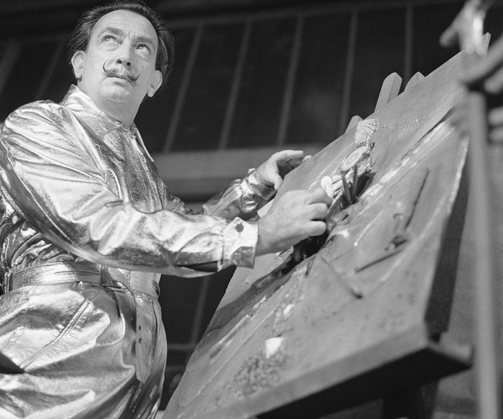

EP. 001 TRAS EL MARCO
ARTE · MISTERIO · HISTORIA
¿Cómo robaron una obra de Dalí de 150 kilos?
¿Cómo puede desaparecer de un museo una cubierta de bronce de 150 kilos? Descubrimos la historia de una creación extraordinaria de Salvador Dalí y el robo que la convirtió en protagonista de una investigación.
Ya disponible en Spotify